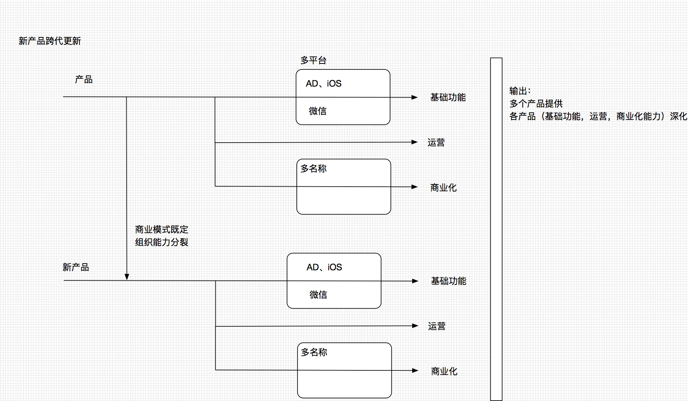

新产品部规划
产品跨代升级
关键点
运营构想能否正常运转？
建立驱利女用户的变现机制，是整个生态完成较为重要的一步棋。
- 可以通过活跃女性用户大范围取代策略；
- 女性用户的活跃使得生态建立成为可能；
- 女性用户的成本初步打算控制在10%以内；
- 产品包装如何避免公关风险，是接下来面临的挑战。
在此项工作上引入了耿伟，耿伟在直播经纪方面有很足的经验，目前也控制着百人以上的经纪团队。 利用此人的资源先建立较为完善的驱利策略，后期考虑将此人甩出去，使其在驱利产业链上能保证公司和他个人的利益最大化。
变现能力能否大幅提升？
- 基础功能升级后能否直接对arpu有提升还需等上线实测才能验证；
- 驱利女生态建设对arpu提升；
- 同时让王楠准备了一套策略，并通过产品包装一元购的策略，作为备案。
对于变现能力的问题，把握应该在7成以上。
项目进展
第一版的功能版已经推出，功能围绕短视频交友的定位，进行了两周的细节打磨，当前版本看上去还不错。
微信支付申请由于材料问题，第一次申请被驳回，下周中能搞定。
下周一上线两个版本【绝配、恋爱神器】。拍拖下周出。
视频测试 这周出报告
下周的包可以跑量，下周会解决所有的bug
新产品平台化

多平台和多名称属于一个产品内的问题，在单产品内建立能力并做到组织能力可分裂，在新产品启动的时候能够分裂出相关的组织在内部实施，感觉是比较靠谱的做法。如果多平台和多名称并列于多产品，管理难度会几何级增加。
所以，新产品部的产品大战略定位于：多产品平台化。从周二的讨论会上来看，战略先行对于战略达成的重要性影响很大，我也会从现在开始，主要着手思考和执行战略。
多产品的大逻辑：
在多产品的演进方向上，目前整理几个点：
- 用户内在需求（婚恋、约会等）
- 基础体验上平行拓展 （短视频、音频、直播），对于平行拓展，只要强化女性用户主动交互的核心点（基本判断是通过自然交友很难引发大众用户的转化）
- 用户群体 （低端、中端、高端）
- 社交演进趋势上的大杀器 （直播类等）
从现在我着手盯以下几个事情：
- 产品跨代升级的成功率 （有严欣、程远炜、王楠 坐镇，问题不大）
- 拍拖多平台的构建 （微信需要一线经理，同占潮已经沟通数次。 微信新产品已经跑偏，是否需要在公司层面干预）
- 拍拖产品模块组织的人员梯队建设
- 新产品逻辑的思考及后备产品leader的培养或获取
| 姓名 | 职级 | 职务 | 优点 | 不足 | 利益点 | 培养计划 |
|---|---|---|---|---|---|---|
| 严欣 | 产品总监 | 项目leader | 产品定位能力强，爱专研，勤思考。抓本质能力强，利益点清晰 | 大团队的管理能力欠缺,懒散紧迫感不强，榜样能力不足。控制欲望不足。沟通表达能力一般。 | 短期物质回报 看得见的中期回报 | 充分利用起产品定位能力控制管理范围 |
| 程远炜 | 副总监 | 运营leader | 素质优秀，抓本质能力强，能形成框架并分配任务，管理能力强，沟通表达能力强 | |||
| 吕思明 | 副总监 | 一线经理 | ||||
| 赵安庆 | 副总监 | 一线经理 | ||||
| 杨华 | 副总监 | 一线经理 | ||||
| 徐文涛 | 副总监 | 一线经理 | ||||
| 王楠 | 副总监 | 营销leader |
能力模型：
1、 管理能力
2、 战略能力
3、 业务突破能力